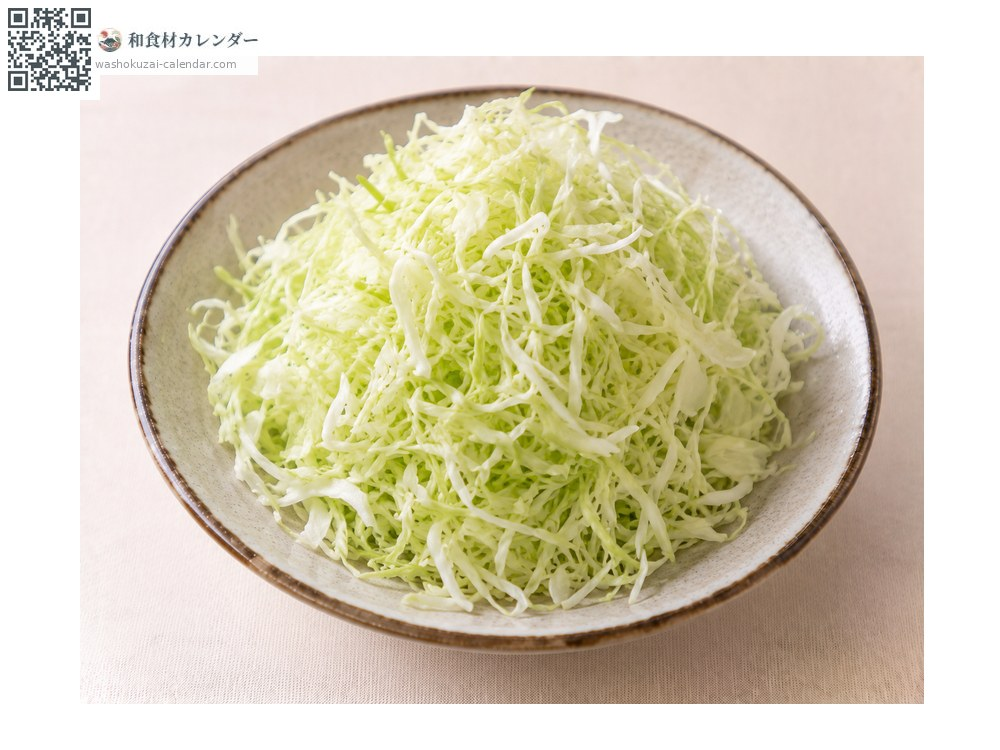
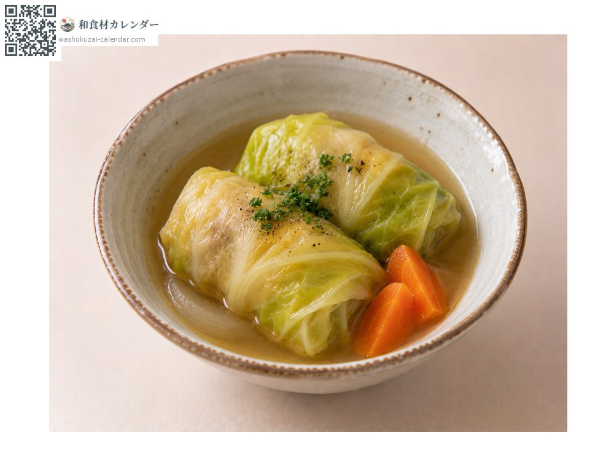
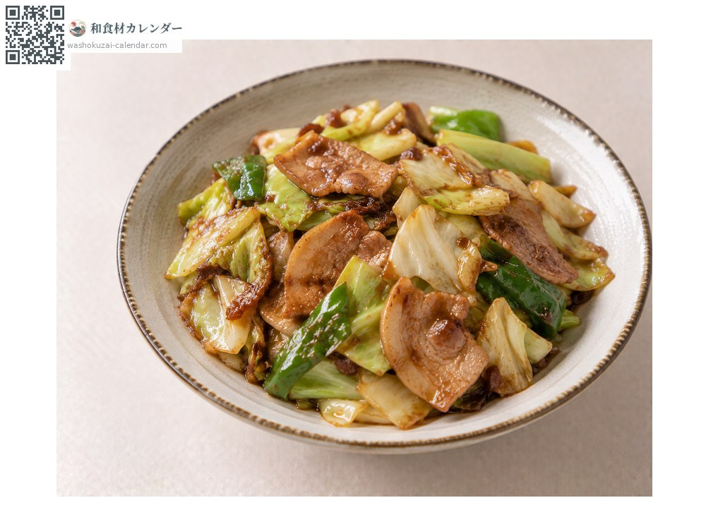
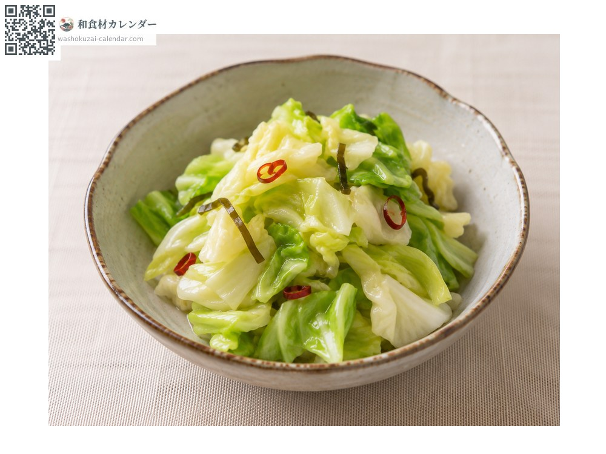

ผัก
กะหล่ำปลี
キャベツ きゃべつ
อร่อยที่สุดในเดือน มี.ค., เม.ย., พ.ค., ต.ค., พ.ย.

ช่วงที่อร่อยที่สุด
ม.ค.
ก.พ.
มี.ค.
เม.ย.
พ.ค.
มิ.ย.
ก.ค.
ส.ค.
ก.ย.
ต.ค.
พ.ย.
ธ.ค.
ช่วงอร่อยที่สุดมีจำหน่าย
วิธีปรุง

กะหล่ำปลีซอยฝอย
กะหล่ำปลีฤดูใบไม้ผลิใบนุ่ม เหมาะกินสด

กะหล่ำปลียัดไส้ตุ๋น
ลวกใบนอกแล้วห่อไส้

ฮอยโครัว (ผัดกะหล่ำกับหมูมิโซะ)
ใช้ผัด กะหล่ำปลีฤดูหนาวเหมาะกับความร้อน

คลุกเกลือบีบน้ำออก
ทำผักดองเร็ว
วิธีเลือก
กะหล่ำฤดูใบไม้ผลิควรม้วนหลวมและเบา ส่วนกะหล่ำฤดูหนาวควรแน่นและหนัก รอยตัดไม่เปลี่ยนสี
วิธีเก็บรักษา
คว้านแกนออก ยัดกระดาษทิชชูชุบน้ำ ใส่ถุงแล้วแช่เย็น
แหล่งผลิตหลัก
เกร็ดน่ารู้
กะหล่ำฤดูใบไม้ผลิใบนุ่มเหมาะกินสด ส่วนฤดูหนาวใบหนาเหมาะปรุงสุก ผักชนิดเดียวกันแต่คุณสมบัติเปลี่ยนตามฤดู
วัตถุดิบที่อร่อยที่สุดในช่วงเดียวกัน
 ดอกตูมฟุกิ
ดอกตูมฟุกิ หน่อไม้ญี่ปุ่น
หน่อไม้ญี่ปุ่น ยอดเฟิร์นวาราบิ
ยอดเฟิร์นวาราบิ ยอดเฟิร์นโคโกมิ
ยอดเฟิร์นโคโกมิ อุโดะ (หน่อไม้ภูเขา)
อุโดะ (หน่อไม้ภูเขา) ฟุกิ (ก้านบัตเตอร์เบอร์)
ฟุกิ (ก้านบัตเตอร์เบอร์) ดอกผักกาดก้านอ่อน
ดอกผักกาดก้านอ่อน เซริ (ผักชีล้อมญี่ปุ่น)
เซริ (ผักชีล้อมญี่ปุ่น)